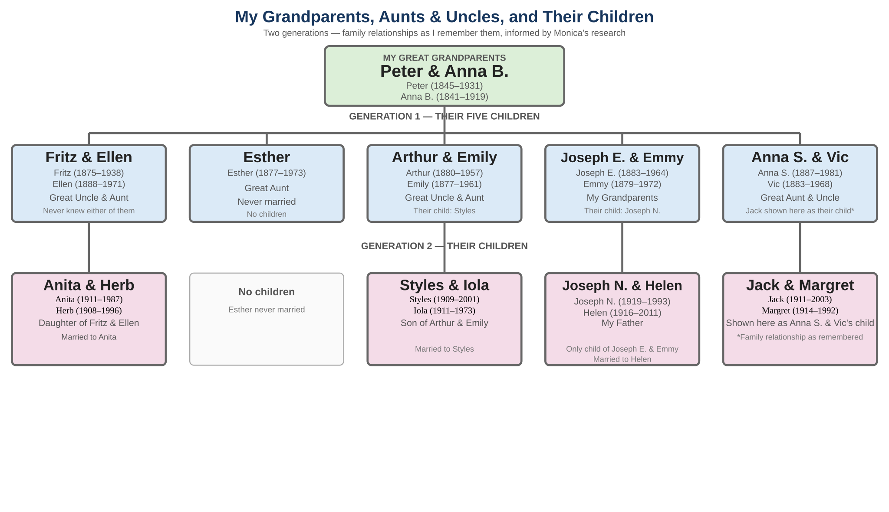
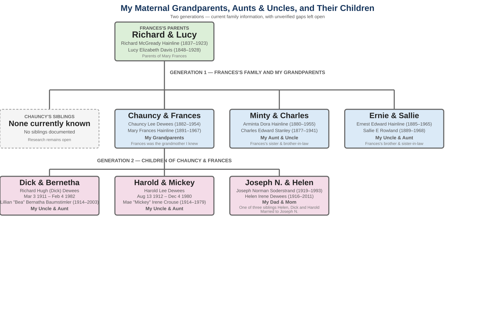
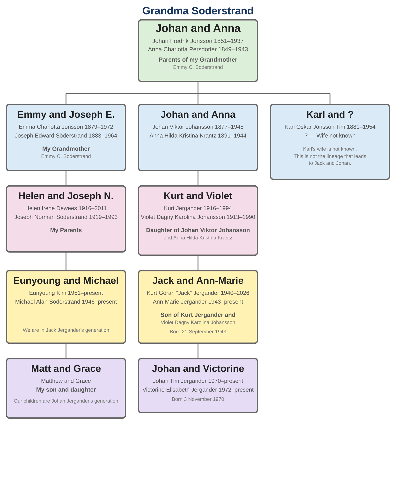

My Aunts and Uncles
My father was an only child, so I do not have any true aunts or uncles on my father's side of the family. But I had lots of people I referred to as aunts and uncles on both sides of my family. Most were actually great-aunts, great-uncles, or other relatives, but that distinction did not matter much to me as a child. I simply knew them as my aunts and uncles, and that is how I remember them today.
First, let's look at the family tree on my father's side.

I spent many weekends and several summers in the 1950s with Grandma and Grandpa Soderstrand—Joe and Emmy—and with "Auntie Esther." In fact, for several summers my sister Norma and I would trade weeks between the two households. One week I would stay with Auntie Esther while Norma stayed with Grandpa and Grandma Soderstrand; the next week we would trade places.
Grandpa and Grandma lived at 1082 24th Street in Oakland, in the house built by my great-grandfather Peter A. Soderstrand. Auntie Esther lived at Anna and Vic Swedberg's house. I referred to Anna and Vic as Auntie Anna and Uncle Vic, although most of my memories of them are connected with our visits to their resort at Clear Lake in Lower Lake, California. As a kid, I did not know that Auntie Esther was house-sitting for Anna and Vic. I only knew that I had a wonderful time there, including playing with Uncle Vic's painting tools in his shop.
Auntie Anna and Uncle Vic had a resort at Clear Lake that we visited often in the 1950s. Anna and Vic owned the resort, but their son, Jack M. Swedberg, whom I called Uncle Jack, ran it. It was not the modern, fancy type of resort one might think of today. It was an old-fashioned place to get away from it all. There was a large main house and a collection of small cabins, along with a fishing dock, boats, and an area cordoned off for swimming in the lake. There were no fancy restaurants or amusement facilities. The idea was simply to get away from it all and enjoy a rustic cabin by the lake.
As a kid, I never really understood the relationships shown in the family tree. For example, I knew Aunt Emily and Uncle Vic, and Aunt Iola and Uncle Styles, as aunts and uncles without realizing that Styles was Emily and Art's son. I never met Fritz and his wife Ellen. Fritz died before I was born, and I do not recall Ellen being part of the family group. But I loved Aunt Anita and Uncle Herb without realizing that Anita was Fritz's daughter.
Auntie Anna, Uncle Vic, Aunt Margret, and Uncle Jack were all aunts and uncles I associated with the wonderful trips to the Clear Lake resort. I played with lots of children my age there, and one of those children, just a little older than me, was Jack Jr., whom I knew was Uncle Jack's son. We did a lot of things together, including hiking, swimming, and skipping rocks. I think we may even have broken some windows once while throwing rocks, but that is a different story.
Usually when we visited Clear Lake, Auntie Esther and Grandpa and Grandma Soderstrand were also at the lake. It was a place with plenty of room for all of us and became a frequent meeting place for the family.
And that leads me into my mother's side of the family. I remember very fondly one trip to the Clear Lake resort that included Uncle Harold and Aunt Mickey and their children. I think the children were Judy, Barbara, and Bettie; I do not think Bobby had been born yet.

On my mother's side I had my only true aunts and uncles: Aunt Bernetha and Uncle Dick, my mom's older brother, and Aunt Mickey and Uncle Harold, my mom's other brother. Aunt Mickey and Uncle Harold were special to me. They visited us in Sacramento, San Francisco, and Clear Lake, and we visited them in Midland, Texas.
Their oldest daughter, Judy, was my favorite cousin. Judy and I had a lifelong relationship that most recently included her two children, Mark and Gigi. Judy is no longer with us, and I miss her a great deal. But Gigi and I still communicate by email, and I hear about Mark through Gigi.
I also had great-aunts and great-uncles on my mom's side whom I knew as Aunt Minty and Uncle Ernie. For some reason, I do not remember Aunt Minty's husband, Charles. I do remember Uncle Ernie's wife, Aunt Sallie, however. She was part—or perhaps entirely—American Indian, and she told wonderful stories about her cultural heritage. I did not have a lot of time with Aunt Minty or Uncle Ernie, even though in his later years Uncle Ernie lived in Sacramento with my Grandma Frances. I do not know what happened to Aunt Sallie. She may have died before Uncle Ernie came to Sacramento.
That completes the aunts and uncles I knew in person. But there is one more important family connection that means a great deal to me: my aunts and uncles in Sweden, whom I never met in person but nevertheless knew a great deal about.

My grandmother Emmy had two brothers in Sweden, Karl Oskar Jonsson Tim—the Tim name is critical—and Johan Viktor Johansson. About 30 years ago, when I was around 50, I started corresponding with Jack Jergander in Sweden. Jack's grandfather was my grandmother's brother, Johan Viktor Johansson, making Jack and me part of the same generation. We enjoyed communicating with each other, first by snail mail and later by email.
Several times I contemplated making a trip to Sweden to meet Jack, but it never seemed to work out. Then, in June 2026, I finally made the trip. I was tremendously excited at the thought of meeting Jack in person for the first time. But in April 2026, Jack died, and I was devastated.
Much to my pleasant surprise, however, Jack's son Johan Jergander met us in Sweden. Johan filled us in on the family history and, in particular, the story of the Tim family. He also shared the remarkable story of the money my grandmother Emmy sent to Sweden every month, together with Maxwell House coffee. She did this for years without telling anyone in the family. It was a wonderful story—one that I had never heard from my grandmother herself.
So I never met my good friend Jack in person. But I did meet his wonderful son Johan, and through Johan I was able to connect with a part of my family history that had always been just beyond my reach. That made our trip to Sweden in June 2026 especially meaningful.